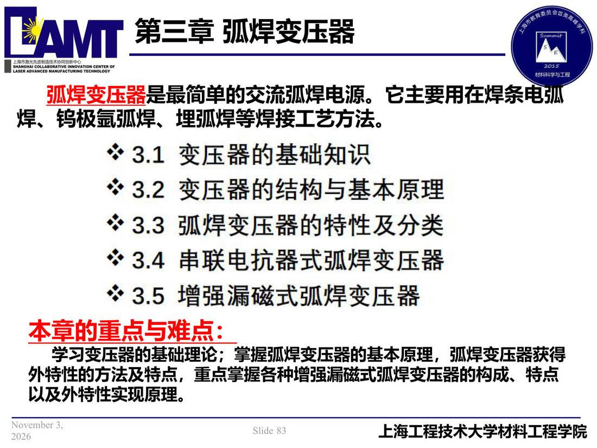

03 第3章 弧焊变压器/p083 本章导览
p083 本章导览
📄 原文：📄 弧焊电源 课件（PDF 第 83 页）（幻灯片 83/273；PDF 第 83 页）
本章导览

讲义原文
弧焊变压器是最简单的交流弧焊电源。它主要用在焊条电弧
焊、钨极氩弧焊、埋弧焊等焊接工艺方法。
本章的重点与难点：
学习变压器的基础理论；掌握弧焊变压器的基本原理，弧焊变压器获得外特性的方法及特点，重点掌握各种增强漏磁式弧焊变压器的构成、特点以及外特性实现原理。
本页标红（老师强调）
- 弧焊变压器
- 本章的重点与难点：